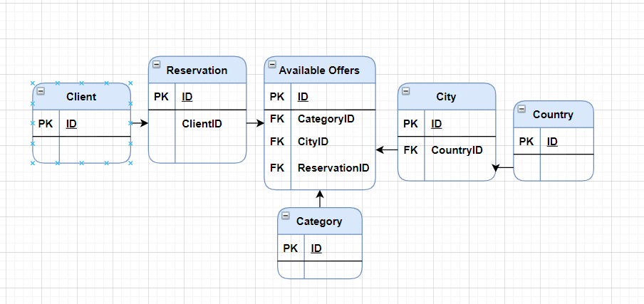

Despre proiect
Scurtă descriere
Proiectul meu va consta într-o interfață simplu de utilizat pentru a rezerva bilete de avion.
Aceasta va putea fi accestă de două tipuri de utilizatori: user-i și administratori.
User-ul poate căuta bilete în funcție de preferințe cu ajutorul unui search bar și unui filter.
În urma rezervării biletului se va elibera un virtual receipt în care se va confirma și se vor afla informațiile tranzacției.
Administratorul va putea accesa direct un form prin care va putea modifica baza de date pentru a adauga
si a corecta anumite greseli ce pot aparea din cauza interventie user-ului. Acessul acestuia îi va fi restricționat,
în anumite situații care vor depinde de consimțămantul utilizatorului a caror date sunt modificate. Orice modificare va întoarce o cerere de confirmare a modificărilor
Modul de proiectare
Componente
Homepage va întâmpina cel care accesează site-ul printru-un slide de fotografii ce vor tranziționa lent poze cu diverse destinații
exotice tipice unei companii turistice și un text care arată sigla companiei inexistete pe care am creat-o împreună cu un mesaj de bun venit pe platformă
,îmbiind potențialul utilizator să utilizeze serviciul oferit de site. Odată apăsat, hompage-ul va tranziționa către următorul component, un Registration Form
Login este un Registration Form care va stabili la introducerea datelor in casutele corespunzatoare (restricționate pentru a introduce doar informatia corectă)
dacă utilizatorul va accesa platforma drept un user, ori un admin, lasând-ul să opereze spațiile desemnate. Acesta va fi implementat printr-un Server folosind variabilele aferente ale acestuia
(PHP_AUTH_USER, PHP_AUTH_PW, AUTH_TYPE, etc.)
Userspace va conține un search bar asemanator imagini de jos, (restrictionat corespunzator pentru a evita redundante si traseuri imposibile)
care va afisa o serie de raspunsuri ce vor putea fi filtrate in functie de pret,timp,nr. de escale etc. dupa preferința user-ului.
În urma alegeri unui bilet, acesta va trebui sa aleaga locul in avion in limita disponibilitati și va trebui sa confirme rezervare,
de asemenea i se vor prezenta trei zoboruri alternative in cazul in care va dori sa se razgandeasca. Pe urma,
dupa modificarea bazei de date acesta va primi o chitanta virtula care va confirma ca tranzactia avut loc.

Adminspace este un loc special rezervat pentru admin ce va face printr-o serie de functii accesarea usoara si modificarea datelor din platforma.
Aceste functii vor consta in filtrarea rapida a datelor, accesarea simpla a istoricului actiunilor efectuate pe platforma de catre utilizatori,
abilitatea de a corecta neregularitati, de a adauga si de a sterge in baza de date. Actiunile admin-ului vor avea totuși impuse anumite restricții care vor impiedica
proasta functionare a sistemului și nerespectare drepturilor user-ului asupra datelor sale personale inventate.
Baza de date
Baza de date o să conțină toate informațiile necesare pentru cumpărarea biletului.
Baza pasagerului conține datele de indentificare precum și datele de acces în platformă ale acestuia (nume complet, email, parola).
Ea se leagă de baza de date a detaliilor zborului prin relația INFO_Ticket care oferă informații adiționale despre statul zborului,
dacă este available sau nu, și despre data de plecare. Baza de date a zborului conține toate informațiile despre avion
(firma, prețul, timpul de decolare, timpul de aterizare etc) acesta se leagă de a detallior zborului printr-o cheie externă ce reprezintă id-ul calătoriei

Surse
Inspirație design.
https://www.flugo.ro/ro
https://www.kiwi.com/ro/
https://www.veltravel.ro/
https://www.flyblueair.com/ro/ro/
https://www.vola.ro/
Diagrama a fost realizată în https://app.diagrams.net/